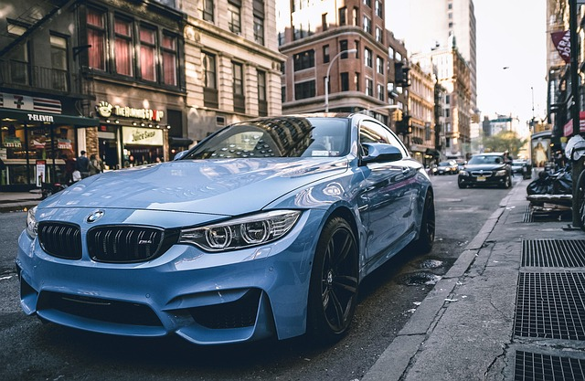

BMW BLOG is the leading independent source for BMW news, reviews, and behind-the-wheel insight.

Founded in 2006 in Chicago, Illinois, BMWBLOG has grown into the world’s largest online publication focused entirely on BMW. We deliver daily news, first-drive reviews, tech analysis, buying guides, and exclusive content—from classic cars to the latest M, i, and X models.
BMW BLOG operates independently. While we attend press events and may receive advertising support, our editorial voice is never influenced. The opinions expressed on this site are those of our writers and do not reflect the official views of BMW of North America, BMW AG, or their affiliates.
Our goal is simple: to serve the global BMW enthusiast community. We provide trusted, timely, and engaging automotive journalism—from spy photos and test drives to technical deep-dives, ownership advice, and motorsport coverage.
BMW BLOG maintains full editorial independence. All reviews and opinions are based on firsthand experience, road tests, or in-depth analysis.